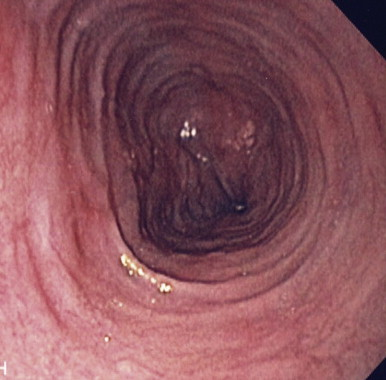
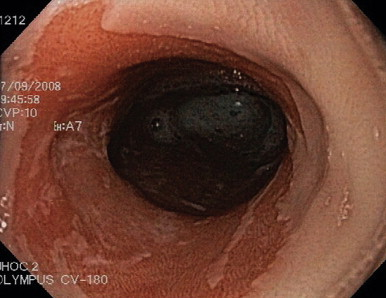
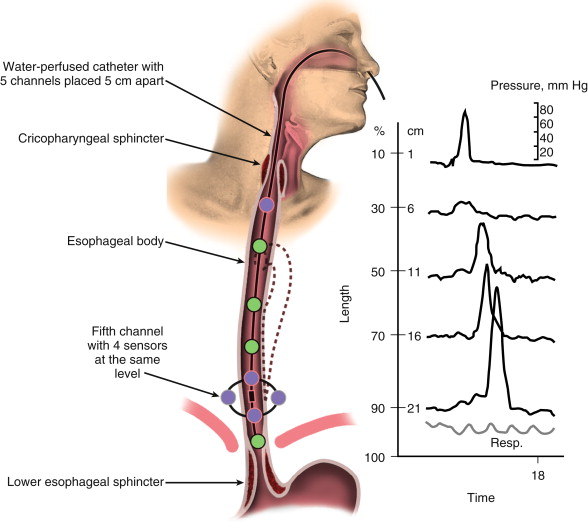
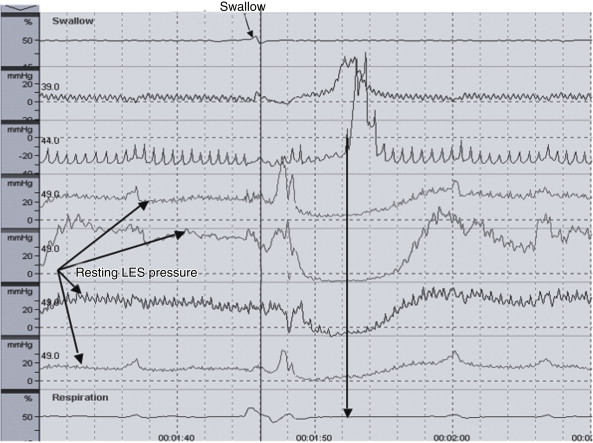

Achalasia
Diffuse
Oesophageal Spasm
Nutcracker
Oesophagus
Notes / Images
1. Eosinophilic Oesophagitis
- cause of dysphagia

2. Barrett
- salmon-coloured mucosal discoloration

3. Oesophageal Manometry

4. Relaxation Study

Normal relaxation response